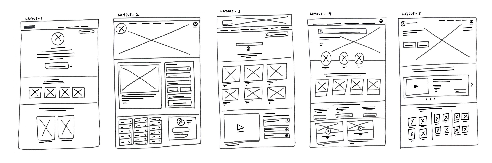

THE PET HOUSE WEBSITE
A UI/UX Case study
A RESPONSIVE
WEBSITE
a Pet Adoption flow
for an Animal Shelter
PROJECT OVERVIEW
Product
Problem
Goal
In order to showcase available creatures, share amazing rescue tales, and facilitate contributions and volunteer sign-ups, I built an online resource for an animal shelter. The website highlights the shelter's commitment to compassion and care and features an approachable layout that promotes neighbourhood involvement and support for our animal companions in need.
The difficulty of finding the ideal pet match online is the problem customers face while using the animal shelter website. Visitors struggle to determine compatibility due to poor pet profiles and limited search options, which makes it difficult for them to pick the best choice for their homes and lives.
By incorporating extensive search
criteria, in-depth pet profiles, and a matchmaking algorithm, the aim is to improve the user experience. This will make it easier for users to choose the ideal pet on the Internet by allowing them to identify animals that suit their Interests, lifestyles, and personalities.
DESIGN PROCESS
Research Summary
Extensive user research was done in order to solve the issue of consumers finding it difficult to choose the correct pet on our website for the animal shelter. To learn more about the needs and preferences of potential adopters, we conducted questionnaires, Interviews, and usability testing. We looked at their web surfing patterns, thought processes, and the precise details individuals looked for when considering adopting pets. Our plan to incorporate enhancements like sophisticated search filters, thorough pet profiles, and a customised recommendation engine was influenced by this study. Ultimately, we want to increase successful adoptions and improve the user experience on our platform by providing people with the knowledge and resources they need to make emotionally satisfying decisions when selecting a furry friend.

PERSONA
Problem Statement :
Raj is unsure about the day-to-day aspects of dog ownership, such
as which breed to get and how to balance his academic career with the obligations of pet care.
USER FLOW
IDEATE & DESIGN
USER PAIN POINTS
User may find it difficult to narrow down their selections based on factors like breed, size, age, and temperament when presented with restricted search filters.
1
Because there are so many animals accessible, users could feel overwhelmed and unsure of where to begin. Lack of personalised advice or recommendations may make the problem worse.
3
User may be deprived of crucial details such as a pet's history, behaviour, medical requirements, and suitability for usage around kids or other animals due to inadequate or lacking pet profiles.
2
I sketched out paper wireframes for each screen in my app, keeping the user pain points about navigation, browsing, and checkout flow in mind. The home screen paper wireframe variations to the right focus on optimizing the browsing experience for users.

Lo-fi Wireframes
Hi-fi Wireframes
Usability Stusy : Findngs
Accessibility considerations
TESTING
LACK OF PERSONALIZATION
Because there are so many animals
accessible, users could feel overwhelmed and unsure of where to begin. Lack of personalised advice or recommendations may make the problem worse.
INADEQUATE PET INFO
Users may be deprived of crucial details such as a pet's history, behaviour, medical requirements, and suitability for usage around kids or other animals due to inadequate or lacking pet profiles.
LIMITED SEARCH OPTIONS
Users may find it difficult to narrow down their selections based on factors like breed, size, age, and temperament when presented with restricted search filters.
Used headings with different
sized text for clear visual
hierarchy
Used Icons to help users navigate
the site, including users who rely
on assistive technologies
Designed the site with alt
text available on each page for
smooth screen reader access

My hi-fi prototype followed the same user flow as the
lo-fi prototype, and included the design changes made after the usability
study
PROTOTYPE
DESIGN ELEMENTS
Typography
Color
Sen
ABCDEFGHIJKLMNOPQRSTUVWXYZ
abcdefghijklmnopqrstuvwxyz
1234567890
#2E5D82
#5EABE3
#FFAEC6
#FA8E7E
TAKEAWAY
Impact
What I learned ?
Users will be significantly affected if the pet selecting procedure on the animal shelter website is improved. They will select the ideal pet with more confidence and comfort, which will result in more successful adoptions.
This simplified procedure will promote joyful feelings,
promote participation, and eventually lead to happier,
contented pet owners and animals finding loving homes.
I've learnt the value of user-centric design, the need
for data-driven decisions, and the possibility to have
a good influence on animal adoption via the creation
of this website.
MOCKUPS : SCREEN SIZE VARIATION